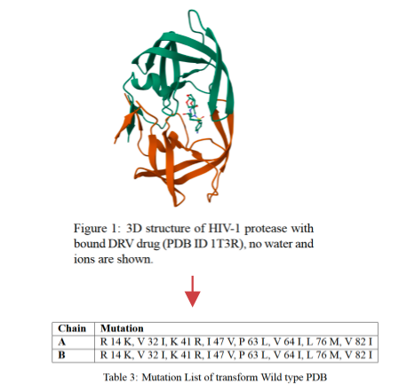
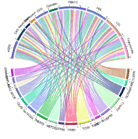

丹麦哥本哈根大学
生物信息学（计算机科学方向）· 理学硕士
机器学习 · 算法与数据结构
高维数据分析 · 计算生物学
学习路径
- 环境科学ENVIRONMENTAL SCIENCE
- 计算机科学COMPUTER SCIENCE
- 生物信息学BIOINFORMATICS
从环境科学到计算机科学
本科阶段接触 Python 后，我开始对用代码和数据解决问题产生兴趣，也逐渐把关注点转向背后的计算方法。
进入研究生阶段后，我选择转向生物信息学（计算机科学方向），并在研一期间除完成本校课程外，额外在 IT University of Copenhagen 选修“算法与数据结构”和“数据科学”，系统夯实算法、编程与数据分析基础。
02 / 主修课程
计算、算法与数据训练
算法与数据结构 · 数据科学
03 / 研究项目
探索多重突变对 HIV 药物抗性数据库中
蛋白质-配体相互作用的影响
- 研究问题
- 多重突变如何影响蛋白质-配体结合自由能？
- 方法
- Rosetta · ΔΔG · HPC · DeIC
- 数据 / 平台
- HIV 药物抗性相关基因型-表型数据集
DeIC 高性能计算平台 - 结果
- 识别显著影响结合亲和力的突变，并通过自动化脚本提升实验室分析效率。
主要内容
利用丹麦电子基础设施合作组织（DeIC）的高性能计算平台，使用 Rosetta 软件对与 HIV 药物抗性相关的基因型-表型数据集进行了深入分析。通过计算蛋白质-配体相互作用中的多重突变对结合自由能变化（ΔΔG）的影响，探索药物抗性与突变之间的关系。
项目成果
使用 Rosetta 软件及高性能计算平台（DeIC），成功计算了多重突变体的 ΔΔG 值，发现了一些突变导致了显著的结合亲和力变化。这些发现为设计有效的 HIV 药物提供了重要信息。为优化实验流程，也为实验室编写了自动化数据处理脚本和软件说明书，加速分析进度，提高整体工作效率。
- 01数据Genotype–Phenotype Data
- 02结构建模Rosetta
- 03ΔΔG 计算HPC / DeIC
- 04突变比较Mutation Analysis
- 05结果解释Binding Affinity
从复杂生物数据出发，借助计算模型与高性能计算理解分子层面的变化。

04硕士论文
研究结果可视化
MAFLD × CVD × Kidney Disease × Type 2 Diabetes × Depression
- 约 50 万
- UK Biobank 个体数据
- 24 个
- MAFLD 相关基因位点
- 1 个
- 与 CVD、肾病和抑郁症均显著关联的重点位点
代谢相关脂肪肝疾病（MAFLD）
与多系统疾病的全基因组关联分析
- 研究问题
- MAFLD 是否与多系统疾病共享遗传风险？
- 数据
- UK Biobank · 约 50 万人基因组数据
- 方法
- GWAS · Python · R · Bash · Computerome
- 结果
- 筛选 24 个相关基因位点，并发现部分位点与 CVD、肾病和抑郁症存在显著关联。
主要内容
对代谢相关脂肪肝疾病（MAFLD）与肾病、心血管疾病（CVD）、2型糖尿病和抑郁症等疾病的关联进行全基因组关联分析（GWAS），旨在揭示 MAFLD 相关基因与特定表型之间的内在机制。该项目依托大规模数据库（UK Biobank），对数百万条数据进行了筛选和分析。
项目成果
利用 Python、R 以及 bash 对数据进行深入分析，从 50 万个病人的基因组数据中筛选出 24 个与 MAFLD 相关的基因位点，进一步分析后发现其中一个基因与 CVD、肾病和抑郁症的关联性显著。该分析为疾病的遗传机制提供了新的视角，同时利用大数据和高性能计算平台（Computerome）提升了数据处理效率。
研究路径
- 表型定义Phenotype Definition
- 全基因组关联GWAS
- 位点筛选Significant Loci
- 跨疾病比较Cross-disease Comparison
- 结果解释Interpretation